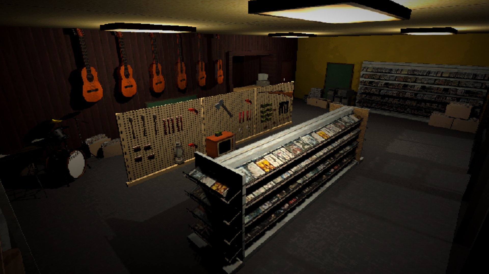
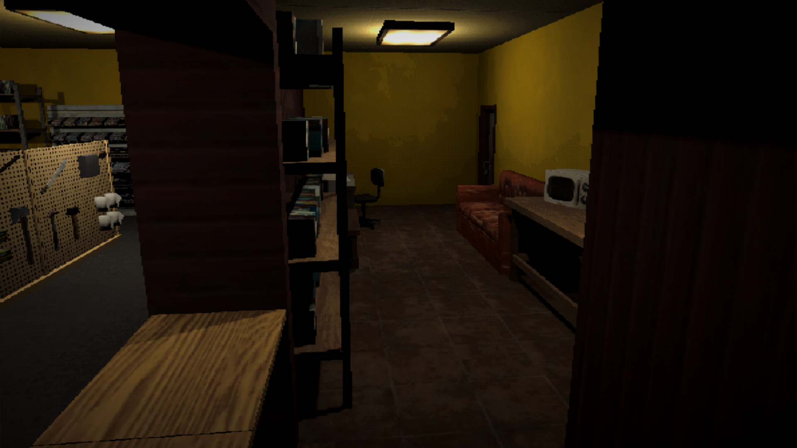
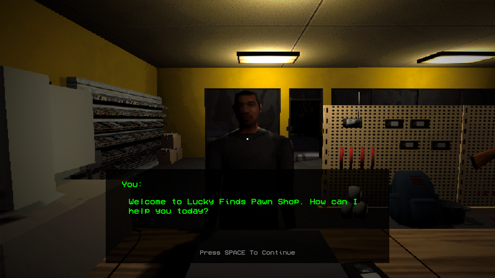
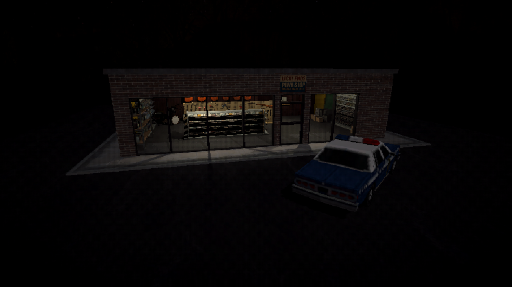
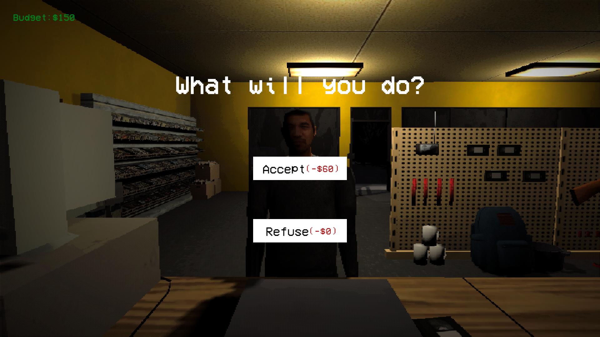
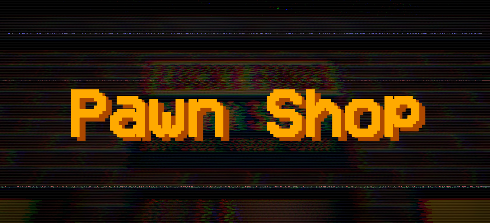

Pawn Shop is a first-person exploration/clicking simulator indie game by Colourplay Games. In this game, you play as a newely hired pawn shop employee set to work the night shift. Specifically, from midnight to 5:00 am. Why is a pawn shop open from midnight to 5:00 pm? That is a fantastic question.

The gameplay of Pawn Shop is incredibly simple, with it more or less being a walking and clicking simulator. In other words, most of the gameplay is walking around pressing "e" on certain objects. This includes objects on the shelves, the cash register, and the windows and floor to clean them. In addition, you will be visited by a variety of customers throughout the night, and will have to decide whether to buy their pawned objects or reject them. You have a limited amount of cash, and what you pick will affect later parts of the game, so be careful what you acccept.

You play as... "You." The player does not have a name, so feel free to project yourself onto the main character.
In addition to You, there are a handful of customers that will visit and interact with you throughout the night. Each of them have distinct personalities, from chill traders to suspicious old men. Likewise, you meet and interact with Dan, the day time employee you take over for. Don't get too comfy though, as Dan is prone to messing with the player, including shutting down the power and jump scaring you from behind the counter. But are these practial jokes just for laughs, or is there something more malicious in Dan's actions?

Anyone who's familiar with old late-1990's games will recognize this artstyle instantly. Being an indie game, Pawn Shop takes advantage of its small budget by going for a retro artstyle. This helps add to both the eerieness and the humor of the game. Things far away from the player are just too difficult to make out, while the texture painted skin of the customers is sure to get a laugh the first time seeing them. This is all amplified by the lighting, which is harsh and bright in some areas while dim and dark in others.

While the game is solid for what it's going for, there are a few elements that I wish were included in the final product.
First would be the inclusion of more customers. Currently, there are only 4 customers that come to you throughout the night, and while this isn't detrimental to the game, it does leave me wanting more. It would be cool to see more interaction, more memorable personalities, and more options for us, the player, to experience.
Second, it would've been cool if we could determine our own prices for taking objects in. While I understand the need for having a fixed buy price, as money management is an important aspect of the game, it does leave me wishing for the ability to determine the value of objects for myself. I suppose my suggestion for Colourplay Games is for their next game to be a pawn shop tycoon.

Pawn Shop is a small yet well made game that delivers on what it promises. While the gameplay may be simple, the atmosphere it strives for more than makes up for that. The retro artstyle combined with clever lighting provides players with a fun and tense experience that they won't soon forget. Because of this, I give Pawn Shop a rating of:
If Pawn Shop sounds like a game you'd enjoy, then go ahead and give it a try at itch.io/pawn-shop.com.
